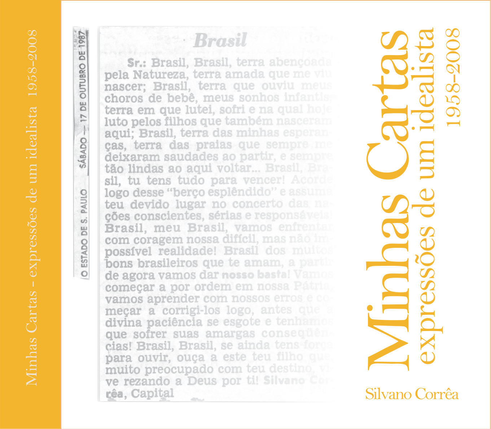

Volumen 1
1958 — 2008
El primer volumen reúne cincuenta años de cartas publicadas en diversos periódicos y revistas, incluyendo O Estado de S. Paulo, Time Magazine y Pittsburgh Press. Un testimonio de una vida dedicada al pensamiento crítico y la participación ciudadana.
ISBN: 978-65-01-56953-6